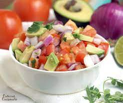

Kachumbari

Kachumbari takes the accolade of most delicious salad of Kenya. Trust me when I say kachumbari is the epitome of simplicity. It is so simple you can whip it up in no time.
Serve Kachumbari as a side dish or condiment for pilau rice, kenyan grilled meat known as "Nyama Choma" or even Mutura.
Ingredients
- Fresh ripe tomatoes
- onions
- green/red pepper
- lemon juice
- coriander
- Avocado
Method
- Wash all the vegetables required for making Kachumbari then pat them dry with a disposable kitchen towel.
- Chop the onions finely, add them in a bowl of salted water and wash for about a minute. This process eliminates the pungent and bitter taste present in the onions. It also makes the milder and more flavorful.
- Chop all other ingredients and add them in a large bowl
- Add the lime juice, olive oil and salt to taste and you're good to go.